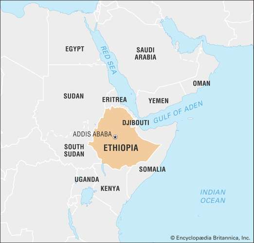

Ethiopia, country on the Horn of Africa. The country lies completely within the tropical latitudes and is relatively compact, with similar north-south and east-west dimensions. The capital is Addis Ababa (“New Flower”), located almost at the centre of the country. Ethiopia is the largest and most populated country in the Horn of Africa. With the 1993 secession of Eritrea, its former province along the Red Sea, Ethiopia became landlocked.
Ethiopia is one of the world’s oldest countries, its territorial extent having varied over the millennia of its existence. In ancient times it remained centred on Aksum, an imperial capital located in the northern part of the modern state, about 100 miles (160 km) from the Red Sea coast. The present territory was consolidated during the 19th and 20th centuries as European powers encroached into Ethiopia’s historical domain. Ethiopia became prominent in modern world affairs first in 1896, when it defeated colonial Italy in the Battle of Adwa, and again in 1935–36, when it was invaded and occupied by fascist Italy. Liberation during World War II by the Allied powers set the stage for Ethiopia to play a more prominent role in world affairs. Ethiopia was among the first independent nations to sign the Charter of the United Nations, and it gave moral and material support to the decolonization of Africa and to the growth of Pan-African cooperation. These efforts culminated in the establishment of the Organization of African Unity (since 2002, the African Union) and the United Nations Economic Commission for Africa, both of which have their headquarters in Addis Ababa.
